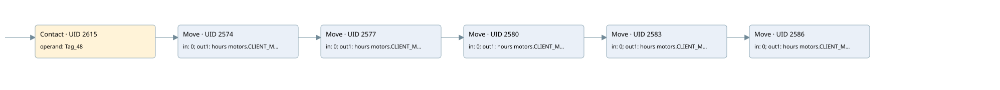

time work motor
time work motor · 검색 색인 순서 44 · 원본 내부 NID 추정 47
백업 PLF 원본의 2898032 바이트 위치에서 복원한 XML. 검색 문서 1045의 객체 키 161022005212000000000000와 연결했다. 이름 해석 11/11개. 남은 RefId는 상수 또는 미해석 참조다.
연결 구조 다시 그리기
원본 Part/PCon/Wire를 이용한 연결도다. TIA 화면의 래더 배치 또는 실행 결과를 재현한 그림은 아니다. 핀 연결은 아래 표와 원본 XML을 기준으로 읽는다. 노드 위에 마우스를 두면 피연산자 이름을 볼 수 있다.

접점·코일·블록과 피연산자
| Part UID | Gate | Negated 핀 | 연결 피연산자 |
|---|---|---|---|
| 2615 | Contact | operand = Tag_48 | |
| 2574 | Move | in = 0; out1 = hours motors.CLIENT_MOTOR_1_HOUR | |
| 2577 | Move | in = 0; out1 = hours motors.CLIENT_MOTOR_2_HOUR | |
| 2580 | Move | in = 0; out1 = hours motors.CLIENT_MOTOR_3_HOUR | |
| 2583 | Move | in = 0; out1 = hours motors.CLIENT_MOTOR_4_HOUR | |
| 2586 | Move | in = 0; out1 = hours motors.CLIENT_MOTOR_5_HOUR |
접점 경로를 펼친 조건식
Contact·O/A·비교기의 원본 연결을 읽기 쉽게 펼친 보조 해석이다. POWER는 전원 레일 시작을 뜻한다. 호출 블록·에지·타이머의 내부 동작과 다중 쓰기 순서는 이 표로 실행 검증하지 않았다. 미해석 핀과 RefId는 원문 연결표에서 확인한다.
| UID | 동작 | 대상 | 원본 접점 경로 | 내용 |
|---|---|---|---|---|
| 2574 | Move | hours motors.CLIENT_MOTOR_1_HOUR | Tag_48 | Move 입력 0 |
| 2577 | Move | hours motors.CLIENT_MOTOR_2_HOUR | Move UID 2574.eno (블록 동작 확인) | Move 입력 0 |
| 2580 | Move | hours motors.CLIENT_MOTOR_3_HOUR | Move UID 2577.eno (블록 동작 확인) | Move 입력 0 |
| 2583 | Move | hours motors.CLIENT_MOTOR_4_HOUR | Move UID 2580.eno (블록 동작 확인) | Move 입력 0 |
| 2586 | Move | hours motors.CLIENT_MOTOR_5_HOUR | Move UID 2583.eno (블록 동작 확인) | Move 입력 0 |
원본 배선 연결
| Wire UID | 동일 Wire 연결 끝점 |
|---|---|
| 2617 | Powerrail {} ↔ Part 2615.in |
| 2600 | ORef 2589 (Tag_48) ↔ Part 2615.operand |
| 2616 | Part 2615.out ↔ Part 2574.en |
| 2601 | ORef 2590 (0) ↔ Part 2574.in |
| 2603 | Part 2574.eno ↔ Part 2577.en |
| 2602 | Part 2574.out1 ↔ ORef 2591 (hours motors.CLIENT_MOTOR_1_HOUR) |
| 2604 | ORef 2592 (0) ↔ Part 2577.in |
| 2606 | Part 2577.eno ↔ Part 2580.en |
| 2605 | Part 2577.out1 ↔ ORef 2593 (hours motors.CLIENT_MOTOR_2_HOUR) |
| 2607 | ORef 2594 (0) ↔ Part 2580.in |
| 2609 | Part 2580.eno ↔ Part 2583.en |
| 2608 | Part 2580.out1 ↔ ORef 2595 (hours motors.CLIENT_MOTOR_3_HOUR) |
| 2610 | ORef 2596 (0) ↔ Part 2583.in |
| 2612 | Part 2583.eno ↔ Part 2586.en |
| 2611 | Part 2583.out1 ↔ ORef 2597 (hours motors.CLIENT_MOTOR_4_HOUR) |
| 2613 | ORef 2598 (0) ↔ Part 2586.in |
| 2614 | Part 2586.out1 ↔ ORef 2599 (hours motors.CLIENT_MOTOR_5_HOUR) |
식별자 해석 근거 11개
| ORef UID | RefId | 이름 | IdentXmlPart 파일 | 해석 방법 |
|---|---|---|---|---|
| 2589 | 284 | Tag_48 | 0613-IdentXmlPart.xml | UID/RID + search-text + NID agreement |
| 2590 | 12 | 0 | 0616-IdentXmlPart.xml | literal candidate: UID/RID/NID + nearby named declarations + search-text agreement |
| 2591 | 10 | hours motors.CLIENT_MOTOR_1_HOUR | 0615-IdentXmlPart.xml | UID/RID + search-text + NID agreement |
| 2592 | 12 | 0 | 0616-IdentXmlPart.xml | literal candidate: UID/RID/NID + nearby named declarations + search-text agreement |
| 2593 | 18 | hours motors.CLIENT_MOTOR_2_HOUR | 0615-IdentXmlPart.xml | UID/RID + search-text + NID agreement |
| 2594 | 12 | 0 | 0616-IdentXmlPart.xml | literal candidate: UID/RID/NID + nearby named declarations + search-text agreement |
| 2595 | 24 | hours motors.CLIENT_MOTOR_3_HOUR | 0615-IdentXmlPart.xml | UID/RID + search-text + NID agreement |
| 2596 | 12 | 0 | 0616-IdentXmlPart.xml | literal candidate: UID/RID/NID + nearby named declarations + search-text agreement |
| 2597 | 30 | hours motors.CLIENT_MOTOR_4_HOUR | 0615-IdentXmlPart.xml | UID/RID + search-text + NID agreement |
| 2598 | 12 | 0 | 0616-IdentXmlPart.xml | literal candidate: UID/RID/NID + nearby named declarations + search-text agreement |
| 2599 | 36 | hours motors.CLIENT_MOTOR_5_HOUR | 0615-IdentXmlPart.xml | UID/RID + search-text + NID agreement |
검색 코드 보조 자료
참조 명칭을 찾기 위한 자료이며 실행 순서나 AND/OR 관계는 위 연결표로 확인한다.
"tag_48" move 0 move 0 move 0 move 0 move 0 "hours motors".client_motor_1_hour "hours motors".client_motor_2_hour "hours motors".client_motor_3_hour "hours motors".client_motor_4_hour "hours motors".client_motor_5_hour